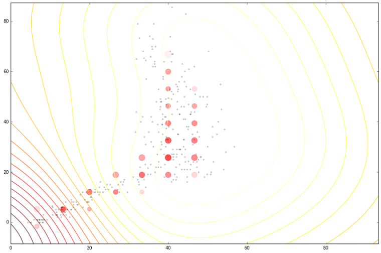
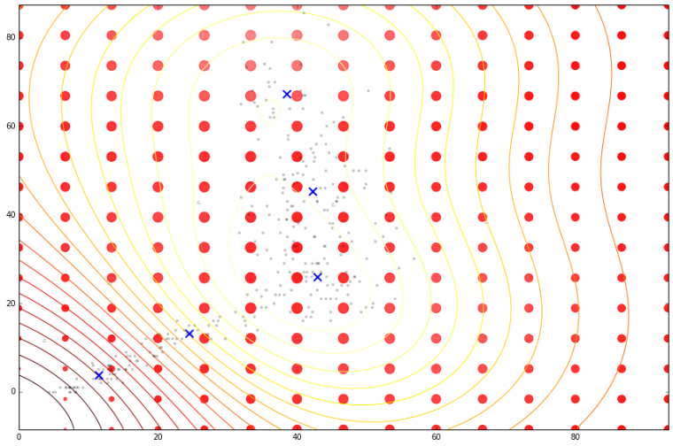
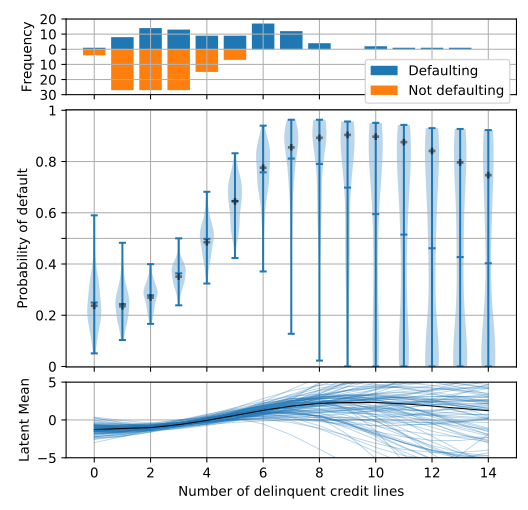
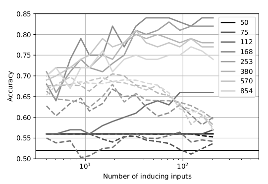

Differentially Private
Gaussian Processes
Presented by Mike Smith, University of Sheffield
michaeltsmith.org.uk
m.t.smith@sheffield.ac.uk
@mikethomassmith


Differential Privacy, summary
We want to protect a user from a linkage attack...
...while still performing inference over the whole group.
Making a dataset private is more than just erasing names.
To achieve a level of privacy one needs to add randomness to the data.
This is a fundamental feature of differential privacy.
See The Algorithmic Foundations of Differential Privacy by Dwork and Roth for a rigorous introduction to the framework.Differential Privacy
A randomised algorithm $M$ is $\varepsilon$-differentially private if, for all $m$, and for all neighbouring databases $D_1$ and $D_2$
$P\Big( M(D_1) = m \Big) \leq e^{\varepsilon} P\Big( M(D_2) = m \Big)$

Why use Gaussian processes?
Some claims...
- Most regression methods (in DP literature) are parametric
- Most of these require an iterative update
These methods are made private either by:
- Perturbations of the update,
- or by making the inputs to the method DP.
Both are inefficient uses of the DP budget.
Differential Privacy for GPs
We have a dataset in which the inputs, $X$, are public. The outputs, $\mathbf{y}$, we want to keep private.

Data consists of the heights and weights of 287 women from a census of the !Kung
Motivation for output only
Unlike most DP regression research, I've made my life easy and am just considering output privacy. This is a common requirement though, e.g.
| Data | Public | Private |
|---|---|---|
| Census | Location | Answers |
| Road collisions | Location/Time | Victim age/gender |
| School mental health survey | School year | Response |
| Staff survey | Department | Individual answers |
Vectors and Functions
Hall et al. (2013) showed that one can ensure that a version of $f$, function $\tilde{f}$ is $(\varepsilon, \delta)$-differentially private by adding a scaled sample from a GP prior.

Applied to Gaussian Processes
We applied this method to the GP posterior.
The covariance of the posterior only depends on the inputs, $X$. So we can compute this without applying DP.
The mean function, $f_D(\mathbf{x_*})$, does depend on $\mathbf{y}$. $f_D(\mathbf{x_*}) = \mathbf{k}_*^\top K^{-1} \mathbf{y}$
We are interested in finding $|| f_D(\mathbf{x_*}) - f_{D^\prime}(\mathbf{x_*}) ||_H^2$
...how much the mean function (in RKHS) can change due to a change in $\mathbf{y}$.
Applied to Gaussian Processes
Using the representer theorem, we can write $|| f_D(\mathbf{x_*}) - f_{D^\prime}(\mathbf{x_*}) ||_H^2$
as:
$\Big|\Big|\sum_{i=1}^n k(\mathbf{x_*},\mathbf{x}_i) \left(\alpha_i - \alpha^\prime_i\right)\Big|\Big|_H^2$
where $\mathbf{\alpha} - \mathbf{\alpha}^\prime = K^{-1} \left(\mathbf{y} - \mathbf{y}^\prime \right)$
The distance above can then be shown to be no greater than $d\;||K^{-1}||_\infty$
if we constrain the kernel $-1\leq k(.,.) \leq 1$
and we only allow one element of $\mathbf{y}$ and $\mathbf{y}'$ to differ (by at most $d$).
Applied to Gaussian Processes
This 'works' in that it allows DP predictions...but to avoid too much noise, the value of $\varepsilon$ is too large (here it is 100)

EQ kernel, $l = 25$ years, $\Delta=100$cm
Cloaking: Think about the effect of perturbation
Previously I mentioned that the noise is sampled from the GP's prior.
This is not necessarily the most 'efficient' covariance to use.
Effect of perturbation

Effect of perturbation

Effect of perturbation
Left: Ideal covariance. Right: actual covariance

DP Vectors
Hall et al. (2013) also presented a bound on vectors.
Find a bound ($\Delta$) on the scale of the output change, in term of its Mahalanobis distance (wrt the added noise covariance).
$\sup_{D \sim {D'}} ||M^{-1/2} (\mathbf{y}_* - \mathbf{y}_{*}')||_2 \leq \Delta$
We use this to scale the noise we add:
$\frac{\text{c}(\delta)\Delta}{\varepsilon} \mathcal{N}_d(0,M)$
We get to pick $M$
Cloaking
Intuitively we want to construct $M$ so that it has greatest covariance in those directions most affected by changes in training points, so that it will be most able to mask those changes.
The change in posterior mean predictions is,
$\mathbf{y}_* - \mathbf{y}'_* = K_{*f} K^{-1} (\mathbf{y}-\mathbf{y}')$
The effect of perturbing each training point on each test point is represented in the cloaking matrix, $C = K_{*f} K^{-1}$
Cloaking
Treating the bound as a constrained optimisation problem we find that we can write
$M = \sum_i{\lambda_i \mathbf{c}_i \mathbf{c}_i^\top}$
where $\mathbf{c}_i \triangleq C_{:i}$
The lagrange multipliers ($\lambda_i$) are solved using gradient descent,
$\frac{\partial L}{\partial \lambda_j} = - \mathbf{c}_j^\top M^{-1} \mathbf{c}_j + 1$
Cloaking: Results
The noise added by this method is now practical.

EQ kernel, $l = 25$ years, $\Delta=100$cm.
$\varepsilon=1$ in this and following plots.
Cloaking: Results
It also has some interesting features;
- Less noise where data is concentrated
- Least noise far from any data
- Most noise just outside data
House prices around London

Citibike
Tested on 4d citibike dataset (predicting journey durations from start/finish station locations).
The method appears to achieve lower noise than binning alternatives (for reasonable $\varepsilon$).
 lengthscale in degrees, values above, journey duration (in seconds)
lengthscale in degrees, values above, journey duration (in seconds)
Cloaking and Inducing Inputs
Outliers poorly predicted.
Too much noise around data 'edges'.
Use inducing inputs to reduce the
sensitivity to these outliers.
Cloaking (no) Inducing Inputs

Cloaking and Inducing Inputs

Results
For 1d !Kung, RMSE improved
from $15.0 \pm 2.0 \text{cm}\; $ to $11.1 \pm 0.8 \text{cm}\;$
Use Age and Weight to predict Height
For 2d !Kung, RMSE improved
from $22.8 \pm 1.9 \text{cm}\; $ to $8.8 \pm 0.6 \text{cm}\;$
Note that the uncertainty across x-validation runs smaller.
2d version benefits from data's 1d manifold.
Cloaking (no) Inducing Inputs

Cloaking and Inducing Inputs

Differentially Private GP Classification
Recap of the Laplace approximation for GP classification:
We replace the exact posterior distribution $p(\mathbf{f}|X,\mathbf{y})$ with an approximation $q(\mathbf{f}|X,\mathbf{y}) = \mathcal{N}(\mathbf{f}|\mathbf{\hat{f}}, A^{-1})$
The estimate of $\mathbf{\hat{f}}$ is iteratively updated with,
$\mathbf{\hat{f}}_{new} = 2B (W\mathbf{\hat{f}} + \mathbf{1}/2 - \pi(\mathbf{\hat{f}})) + B\mathbf{y}$
Ignoring the detail, the key point is that the influence of the output, $\mathbf{y}$, only appears in the last term & we can apply the cloaking method to this last term!
Finally: We can use a low-rank approximation as we did earlier to reduce sensitivity to outliers.
1-D DP Classification
200 samples from Home Equity Loans dataset & DP samples.
15$\times$15 MNIST Sparse DP Classification
Classify $\{0,1,2,3,4\}$ from $\{5,6,7,8,9\}$ using 256 training points.
Solid, not DP; Dashed, DP.

Summary We have developed an improved method for performing differentially private regression & classification.
Future work Multiple outputs, Making the inputs private.
Thanks Funders: EPSRC; Colleagues: Mauricio A. Álvarez, Neil Lawrence, Wil Ward
Code https://github.com/lionfish0/dp4gp
Paper #1 AI STATS link
Paper #2 In submission (will upload to arxiv shortly)
The go-to book on differential privacy, by Dwork and Roth;
Dwork, Cynthia, and Aaron Roth. "The algorithmic foundations of differential privacy." Theoretical Computer Science 9.3-4 (2013): 211-407.
link
I found this paper allowed me to start applying DP to GP;
Hall, Rob, Alessandro Rinaldo, and Larry Wasserman. "Differential privacy for functions and functional data." The Journal of Machine Learning Research 14.1 (2013): 703-727.
link
Articles about the Massachusetts privacy debate
Barth-Jones, Daniel C. "The're-identification'of Governor William Weld's medical information: a critical re-examination of health data identification risks and privacy protections, then and now." Then and Now (June 4, 2012) (2012). link
Ohm, Paul. "Broken promises of privacy: Responding to the surprising failure of anonymization." UCLA Law Review 57 (2010): 1701. link
Narayanan, Arvind, and Edward W. Felten. "No silver bullet: De-identification still doesn’t work." White Paper (2014). link
Howell, N. Data from a partial census of the !kung san, dobe. 1967-1969. link
Images used: BostonGlobe: Mass Mutual, Weld. Harvard: Sweeney. Rich on flickr: Sheffield skyline.
{kind=link}
{kind=link}
{kind=link}